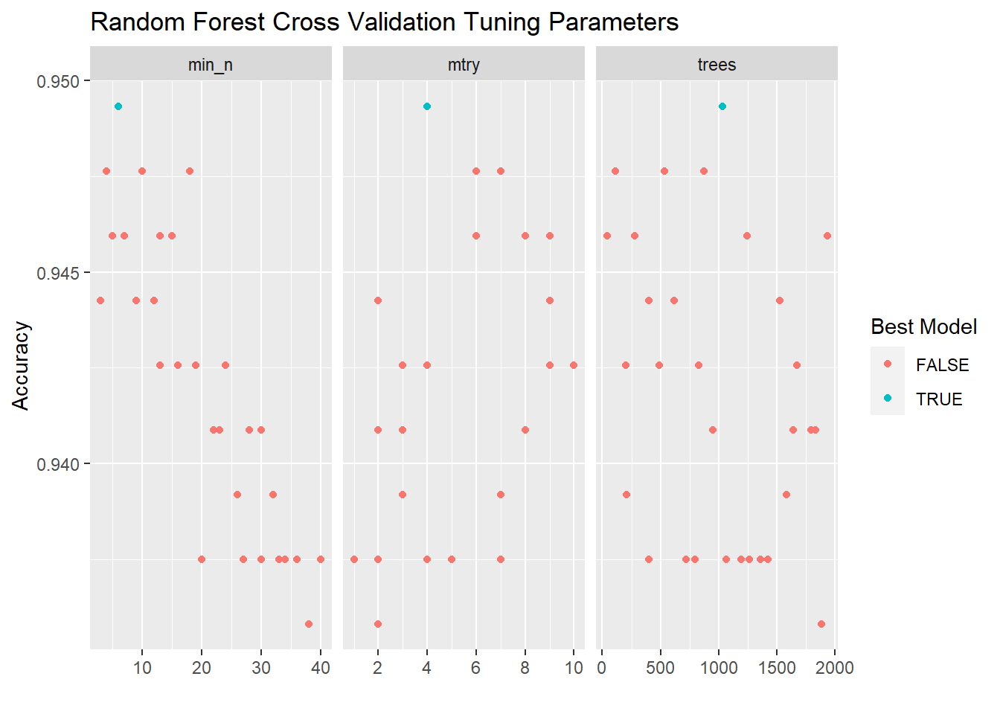

3 Modeling in python with scikit-learn
3.1 Scikit-learn Overview
Like {tidymodels}, scikit-learn offers a suite of tools for predictive modeling and machine learning: it will help you split data, preprocess model inputs, fit models, and compare and assess them.
Unlike {tidymodels}, scikit-learn is a single monolithic package with functions for the entire modeling pipeline. Users will likely still want to use pandas to ingest and prepare data, and may want to use other libraries to supplement scikit-learn’s data visualiation capabilities, but scikit-learn will do most of the work by itself - and often with less and simpler code than tidymodels, at least for standard machine learning workflows.
3.1.1 Tidymodels Road Map
What we plan to do:
- Read in and explore data (pandas and R)
- Create model (scikit-learn)
- split data
- define pipeline with preprocessors and model with cross-validation for parameter tuning
- fit model
- Predict on new data and assess model (scikit-learn)
3.1.2 Modeling Goal
We plan to create a model using the historical data and use that model to predict who is most likely to make it into the Hall of Fame in the eligible data.
3.2 Explore Data
We’ll load the pandas library to import and set up the data.
import pandas as pd
import numpy as npHere, we use panda’s read_csv() to import the data, and then we print the first few rows of the historical dataframe to the console.
historical = pd.read_csv('01_data/historical_baseball.csv')
eligible = pd.read_csv('01_data/eligible_baseball.csv')
historical## player_id inducted g ab r ... sb cs bb so last_year
## 0 aaronha01 1 3298 12364 2174 ... 240 73 1402 1383 1976
## 1 aaronto01 0 437 944 102 ... 9 8 86 145 1971
## 2 aasedo01 0 448 5 0 ... 0 0 0 3 1990
## 3 abbated01 0 855 3044 355 ... 142 0 289 16 1910
## 4 abbotgl01 0 248 0 0 ... 0 0 0 0 1984
## ... ... ... ... ... ... ... ... .. ... ... ...
## 3230 ziskri01 0 1453 5144 681 ... 8 15 533 910 1983
## 3231 zitzmbi01 0 406 1004 197 ... 42 11 83 85 1929
## 3232 zoskyed01 0 44 50 4 ... 0 0 1 13 2000
## 3233 zuberbi01 0 224 229 10 ... 0 0 10 66 1947
## 3234 zuvelpa01 0 209 491 41 ... 2 0 34 50 1991
##
## [3235 rows x 15 columns]The historical data contains career statistics of every baseball batter from 1880-2011 who no longer meet Hall-of-Fame eligibility requirements or who have already made the hall-of-fame.
Hall of Fame Qualifications
- Play at least 10 years
- Retired for at least 5 years
- Players have only 10 years of eligability
The eligible data contains everyone who is still eligible for the Hall-of-Fame
You can see from the data below, the players who make the Hall-of-Fame tend to perform better in a few standard baseball statistics. This pandas code does the same thing as the R code in the previous chapter - it groups the historical data by whether or not the player was inducted into the Hall of Fame, and then takes the mean of each column in each group.
hist_means_inducted_groups = historical.drop('last_year', axis = 1) \
.groupby('inducted') \
.mean() \
.round()We bring the data back into R, using RStudio’s very simple Python-R interface, and use the same R code as in Chapter 1 to print a table and produce boxplots of the means.
py$hist_means_inducted_groups %>%
rownames_to_column(var = "inducted") %>%
gt::gt()| inducted | g | ab | r | h | x2b | x3b | hr | rbi | sb | cs | bb | so |
|---|---|---|---|---|---|---|---|---|---|---|---|---|
| 0 | 792 | 2330 | 305 | 612 | 99 | 23 | 40 | 273 | 48 | 16 | 215 | 269 |
| 1 | 1649 | 5794 | 934 | 1704 | 288 | 75 | 146 | 852 | 161 | 36 | 627 | 551 |
py$historical %>%
group_by(inducted) %>%
pivot_longer(g:so) %>%
ggplot(aes(x = inducted, y = value)) +
geom_boxplot() +
facet_wrap(~name, scales = "free") +
labs(y = "",x = "Hall-of-Fame Indicator")
3.3 Split Data
As we did in R, we will split the data into a training set (2/3s of the data) and testing set (1/3) of the data.
We set the seed so the analysis is reproducible - here, we do this using the random_state parameter in train_test_split().
Instead of an rsplit object that contains resampling metadata, train_test_split() returns four objects: X (predictor) pandas DataFrame objects for the training and test sets, and y (target) pandas Series objects for the training and test sets.
Note that before splitting the data, we set the index of the dataframe to be player_id. This carries through to the outputs of train_test_split(), which all have player_id as a common index (and not as a predictor or target variable.) In a way, this serves a similar purpose to the update_role(player_id, new_role = "ID") line that we added to the recipe in R.
from sklearn.model_selection import train_test_split
historical_pidindex = historical.set_index('player_id')
X = historical_pidindex.drop(['inducted', 'last_year'], axis = 1)
y = historical_pidindex.inducted
X_train, X_test, y_train, y_test = train_test_split(X, y, random_state=0, test_size = 1/3)3.4 Define a Pipeline
Scikit-learn’s “pipelines” serve the combined purpose of “workflows” and “recipes” in {tidymodels}. They allow you to define a set of preprocessing and modeling steps that you can then apply to any dataset. They are defined by the function make_pipeline(), with the steps, in order, as arguments.
The first two steps in our pipeline will take care of preprocessing. In the previous chapter, we centered and scaled our data; here, we’ll use StandardScaler(), which accomplishes both of those steps. We’ll also apply VarianceThreshold(); in its default form, this only removes zero-variance predictors, but the user can set a custom variance threshold. None of our predictors have low variance, so this feature selection mechanism does nothing anyway.
The third step in our pipeline is our model. Here, we’ve chosen LogisticRegressionCV(). The first three parameters should produce a model very similar to the one in the previous chapter:
- penalty = "elasticnet" lets us use a hybrid L1 and L2 penalty, or a mix between Lasso and Ridge regression, much like engine = glmnet in R;
- solver = "saga" chooses a solver that is compatible with our other options;
- l1_ratios = [1.0] is the equivalent of mixture = 1 in R - it gives us a pure Lasso regression;
- max_iter = 1000 allows the solver to attempt up to 1000 iterations as it searches for a solution. The default of 100 was insufficient for this data.
We also have one parameter related to the cross-validation (CV) part of the model specification: cv = 10. This means that the data will be split into ten folds, and the model will be fit ten times, with one fold being held out as a validation set each time. This process will allow the model to tune the size of penalty, which we have not specified explicitly.
NOTE: MAKE SURE THAT I’M CORRECTLY PORTRAYING HOW LOGISTICREGRESSIONCV USES CROSS VALIDATION
from sklearn import preprocessing
from sklearn.linear_model import LogisticRegression
from sklearn.linear_model import LogisticRegressionCV
from sklearn.model_selection import train_test_split
from sklearn.pipeline import make_pipeline
from sklearn.preprocessing import StandardScaler
from sklearn.feature_selection import VarianceThreshold
# l1_ratio
pipe_scale_lr_lasso = make_pipeline(StandardScaler(), VarianceThreshold(), LogisticRegressionCV(penalty = "elasticnet", solver = "saga", l1_ratios = [0.5, 1.0], cv = 10, max_iter = 1000))It is also possible to use a parameter tuning method more like the onein the previous chapter, using gridsearchCV and a predefined grid of search values The scikit-learn user guide has a very detailed section on this method, available at: https://scikit-learn.org/stable/modules/grid_search.html
3.5 Fit the Model (Using the Pipeline)
With our pipeline defined, fitting the model on the training data is very easy: we simply call the fit() method on the pipeline, with our X_train and y_train data as the inputs.
pipe_scale_lr_lasso.fit(X_train, y_train) # apply scaling on training data## Pipeline(steps=[('standardscaler', StandardScaler()),
## ('variancethreshold', VarianceThreshold()),
## ('logisticregressioncv',
## LogisticRegressionCV(cv=10, l1_ratios=[0.5, 1.0],
## max_iter=1000, penalty='elasticnet',
## solver='saga'))])3.6 Score and Evaluate the Model
The most basic way to assess the performance of a fitted scikit-learn model is the score() function, with the test set as inputs. This uses the fitted model to predict on the test set and returns the proportion of correct predictions.
pipe_scale_lr_lasso.score(X_test, y_test)## 0.9397590361445783
pipe_scale_lr = make_pipeline(StandardScaler(), VarianceThreshold(), LogisticRegression())
pipe_scale_lr.fit(X_train, y_train) # apply scaling on training data## Pipeline(steps=[('standardscaler', StandardScaler()),
## ('variancethreshold', VarianceThreshold()),
## ('logisticregression', LogisticRegression())])pipe_scale_lr.score(X_test, y_test)## 0.9397590361445783